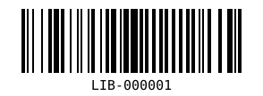

מתחילות כאן
בוחרות אחריות. בונות עד שזה עובד.
השאלה והחזרה הן מסך אחד.
החלוקה היא לפי תהליכי שימוש, לא לפי כפתורים.
כל אחת אחראית לתהליך שלם — ממשק, התנהגות וחיבור לשרת.
האתר מתחיל ריק. ההחלטות המשותפות כבר כתובות.
ספריית בית הספר

השאלה והחזרה הן מסך אחד.
החלוקה היא לפי תהליכי שימוש, לא לפי כפתורים.